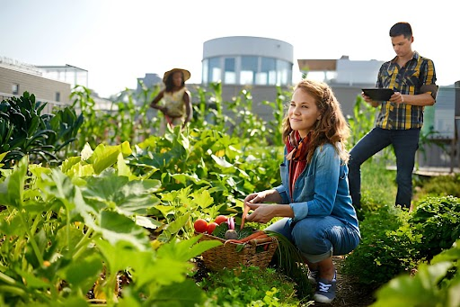

Rooftop Gardens Are Changing Cities
Maria LopezIntroduction: Urban farming is transforming unused city spaces into productive green zones. Rooftop gardens are leading this change.
Why Rooftop Gardens Matter
Cities face food insecurity and environmental stress. Rooftop gardens reduce heat and improve air quality.
Urban farms can reduce city temperatures by 2°C.Average yield per rooftop: 500 kg per year.
Real-World Example
In 2024, the SkyGrow Project launched in New York City.

Project Funding
The initial investment was $250,000.